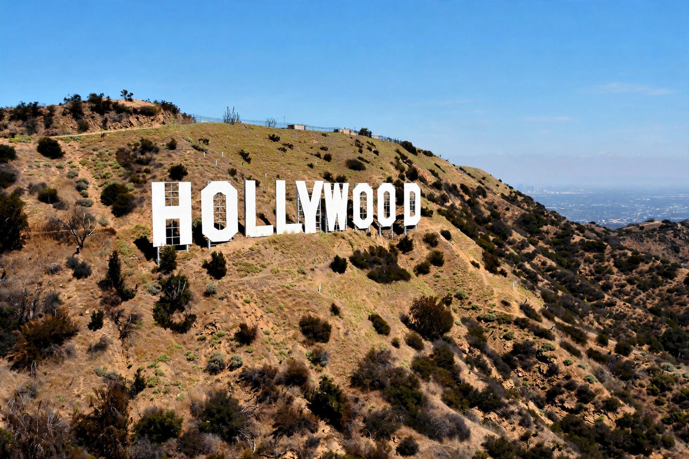

Hollywood Sign
| Hollywood Sign | |
|---|---|
 | |
| Location | Mount Lee, Santa Monica Mountains, Los Angeles, California, U.S. |
| Created | 1923 (as "HOLLYWOODLAND") |
| Height | Letters 45 ft (13.7 m) tall; sign 350 ft (107 m) long |
| Materials | Steel and painted sheet metal (current structure, 1978) |
| Owner | City of Los Angeles; maintained by the Hollywood Sign Trust |
The Hollywood Sign is an American landmark and cultural icon overlooking Hollywood, Los Angeles, California. Originally erected in 1923 as a temporary advertisement for a local real-estate development, the sign originally read HOLLYWOODLAND and was studded with 4,000 light bulbs. It gained increasing recognition throughout the Golden Age of Hollywood and was left in place; in 1949 the last four letters were removed, leaving the nine letters that now symbolise the American film industry around the world.
History
The sign was built for about $21,000 by the Hollywoodland real-estate group to promote a new hillside housing development, and was expected to stand only about eighteen months. Neglected for decades, it deteriorated badly; the "H" toppled in the 1940s and other letters crumbled. The Hollywood Chamber of Commerce removed "LAND" in 1949 and repaired the rest. By the 1970s the sign was a ruin, and in 1978 a public campaign led by Playboy founder Hugh Hefner raised $250,000 — nine donors each sponsoring a letter at $27,778 — to rebuild it entirely in steel. The replacement letters, unveiled in November 1978, are the ones standing today.
Cultural significance and incidents
The sign is protected within Griffith Park behind fencing and surveillance, yet pranksters have repeatedly altered it — to "HOLLYWEED" in 1976 and again in 2017, and to "HOLLYBOOB" in 2021. In 1932 the struggling actress Peg Entwistle leapt to her death from the top of the "H", sealing the sign's darker place in Hollywood mythology. It appears in countless films, album covers and disaster movies, where its destruction has become a visual shorthand for catastrophe in Los Angeles.
Access and conservation
The sign may not be touched and is not directly accessible, but hiking trails in Griffith Park — including the Brush Canyon, Hollyridge and Cahuenga Peak trails — lead to viewpoints above and behind it. The Hollywood Sign Trust, a nonprofit formed in 1992, funds its maintenance and preservation; in 2010 the Trust helped save the surrounding peak land from development. In 2022–2023 the letters received a full repainting for the sign's centennial.